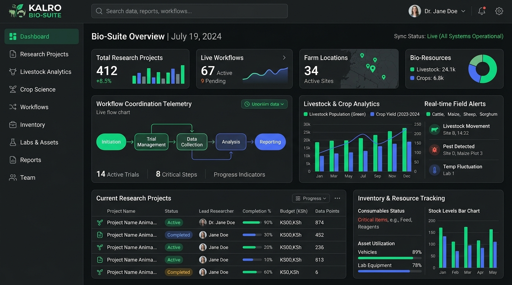

Organizational Suite Concept

// Integrated Organizational Management System
KALRO Bio-Suite
An integrated software suite concept intended to bring diverse organizational activities into a coordinated digital environment. Developed during ICT work at the Kenya Agricultural and Livestock Research Organization (KALRO), focusing on workflow coordination, research telemetry, asset tracking, and unified information management.